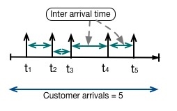
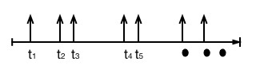
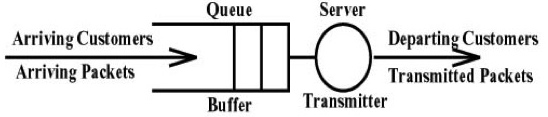
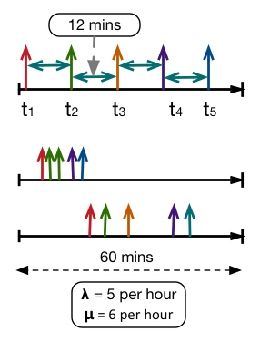
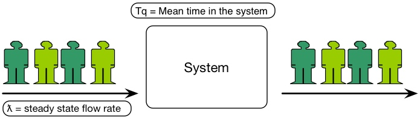
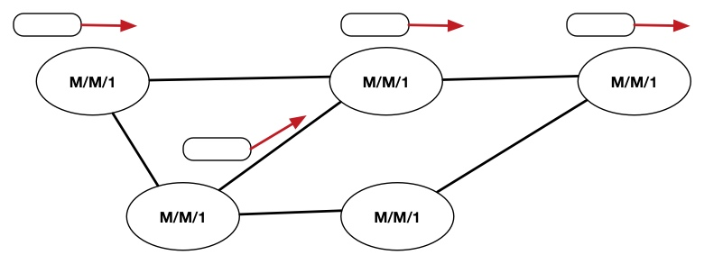
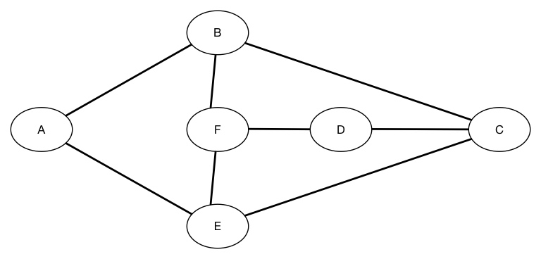
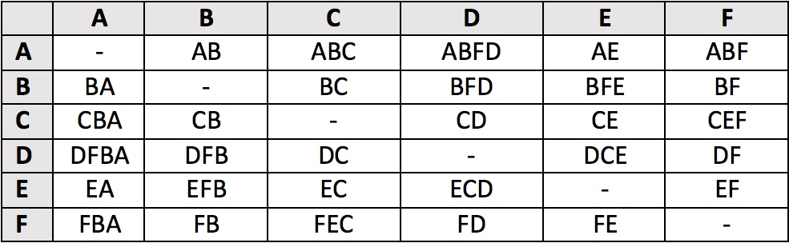
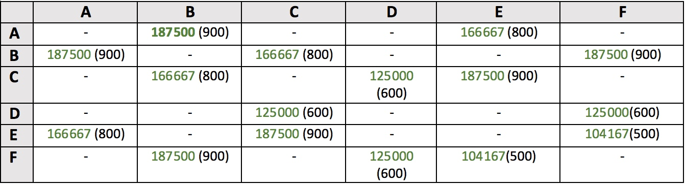
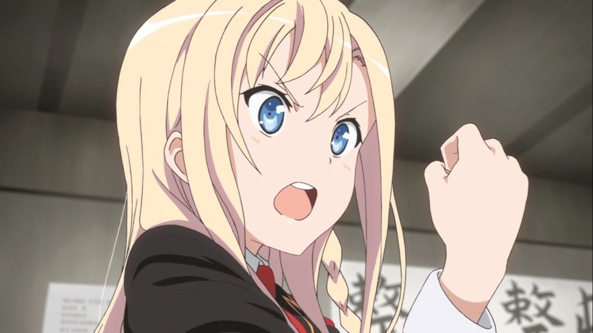

AND (Average Network Delay) and Queuing Theory Basics
Recently I was looking at the Linear programming formulations of Traffic engineering problems and one of the problems is to find the path with the goal to minimize the Average network delay. Which got me thinking that for topology design related problems, how can I calculate the Average network delay? As you can guess, I'm going to introduce the model we implemented in Hokkaido research network.
Before starting few things to keep in mind:
- A background in Probability theory, particularly familiarity with Poisson and Exponential distribution will help. There is no way I can do the justice in explaining all the basics without distracting from the main goal.
- I will involve Queuing theory and the Math involved in Queuing theory gets complicated very fast, especially for an average guy like me. What we are going to look at is the most basic form.
- Please be aware that whatever we cover here only allows us to measure the first order approximation of what happens in real life and it is good for use cases like topology design but not for measuring the exact state of a network for operational purposes.
- As usual disclaimer, I am going to take some luxuries while explaining to keep things simple, so it’s possible that some statements may not be mathematically accurate.
Factors contributing to Packet Delay:
There are typically four factors which contribute to a packet delay in a network. Out of the Four factors, queuing delay is the one which is most interesting and most complicated.
Total Delay = Processing Delay + Transmission Delay + Propagation Delay + Queuing Delay
Queuing delay is the time spent by the packet sitting in a queue waiting to be transmitted onto the link. The amount of time it needs to wait depends on the size of the Queue. If the Queue is empty, then it transmitted immediately, but if it’s sitting behind other packets, then it needs to wait for the packets in front to be transmitted first (common sense).
In order to understand more about Queueing delay, we have to take a step back and look at the basic of Queuing theory first. Then we will look at the simple Queueing model, derivation and then see how we can use that to calculate the Average Network delay.
What is Queuing Theory?
Queuing theory is basically the mathematical study of waiting lines. We see Queues everyday in our life, whether it’s a line in Starbucks, queues of vehicles on the road, packets in Data Networks, Grocery line etc.
Typically, a Queue is formed when people arrive at a place to get some kind of service like getting coffee, grocery, medical help etc. In Queueing theory, we create a model of the Queuing system so that we can predict the performance of the system for parameters like:
* Average number of customers waiting in a line (Average Queue length).
* Average time a customer spends waiting in a line.
* How utilized servers serve the queues.
Queuing theory has been used extensively in Operations Research. As a matter of fact, some of the best lectures I have found on Queuing theory were taught as part of Operations research curriculum.
Components of a Queuing System:
Below is a representation of various components in a Queueing systems.

At a basic level, a Queuing system consists of one or more Servers serving the customers, One or more Queues in which Customers will come and line-up. The length of these Queues can be assumed infinite or finite length to hold customers waiting for service.
- Arrival Process: Represents the Customer arrival pattern. We will look more into the details.
- Service Pattern: how many servers we have and the speed of the Service which is called Service Rate.
- Queue Length: How many people can a Queuing system hold. 10, 20, 200, infinite?
- Queue Discipline: This represents if the queue will be served in First come First serve (FCFS), Last come First Serve (LCFS), Random etc. manner. Typically, it’s FCFS and that is what we will assume for the rest of the article.
Customer Arrival Pattern (Arrival Process)
Customer arrival pattern basically specifies how customers are arriving in the Queuing system. For instance, they can come either in a scheduled manner or they can be totally random. Few parameters we considered here are:
- Arrival Rate: This represents the average rate at which the customers are coming. For instance, let’s say we have a grocery store and we know that on an average, there are 5 customers walks into the store every hour. So the Average rate is 5 customers per hour and it is typically represented by λ(lambda).
- Inter-arrival time: This is the time between the customer arrivals.

If we know that the Customers come in a scheduled manner or follow some sort of pattern, then things would be easy. For instance, going back to our grocery store example, let’s say we are trying to figure out how many cash registers we have to put to handle the customers. We know that on an average 5 customers come every hour and let’s assume that it takes on an average 10 mins to service a single customer which means our Service Rate is 6 customers per hour.
Now If 5 customers walk into the store at a gap of 12 mins each, then there won’t be any queue formed because by the time next customer comes, you would have serviced the previous customer and life would be just good with a single counter. But unfortunately life is not that simple, they all can just show up at the same time and that will form a Queue. So If your service time is too long then you have the risk of them walking out. if they wait for too long, the possibility of them to stop waiting/walk away will be higher.
So, this is the reason why we have built some sort of intuition on why we need to study Queues. Now in our scope, we will assume that Customers arrival pattern is Random in nature.
(Similarly, later we will assume that the packet arrival in Networks is also a Random even though it may not be entirely true in reality).
We will model the customer arrival pattern as a Poisson process. If you don’t know what a Poisson process, I am just going to mention some of the key properties briefly.
Poisson Arrival Model:
A Poisson process is typically used to model scenarios where we are counting the occurrences of certain events that appear to happen at a certain rate, but completely at random. For example, going back to our grocery store example, we know that average customer arrival rate is 5 but we don’t know when they will show up at the store. Poisson process is perfect to model this kind of behavior.

In Poisson process the rate “λ” represents the average number of events per unit time. The Probability of “n” arrivals happening in “t” units of time can be given by: \[ P_n(t)=\frac{(\lambda t)^n}{n!}e^{-\lambda t} \]
I am not going to derive the above formula, but essentially it can help you in answering questions like, give me the probability of 8 customers arriving in our grocery shop in an hour given that we know on an average 5 customers per hour(λ=5) walk into the store.
The inter-arrival times of a Poisson process is independent and it follows an exponential distribution
Again, we are going to skip the proof on how a Poisson process inter arrival times are exponential distribution, but it’s actually pretty simple (though just by saying that may not really help).
Exponential distribution has one key property which is Memoryless. Meaning the past doesn’t affect the Future. It’s also called forgetfulness property and simple examples would be like flipping a Coin. I think I also exhibit symptoms of Memoryless.
Queuing Models Taxonomy:
So in Queuing theory, we use certain kind of notation (Kendal’s notation) to refer to various types of Queuing system. The format of the notation is below
A / B / s / K / n / D
- A – Arrival Process, Inter arrival times distribution. It can be either of these
- M = Represents Markovian or Memory less property like Poisson process.
- D = deterministic (Constant)
- G = General distribution
- B – Service distribution. It can be either of these
- M = Represents Markovian or Memory less property like Exponential service time.
- D = deterministic (Constant)
- G = General distribution
- s – number of servers
- K – system’s capacity (e.g. maximum number of customers in the system including the one being served). Typically, we omit this when it’s infinity.
- n – population size. Usually we consider Infinity for this.
- D – Queue Discipline like FIFO, LIFO, Random etc.
For the majority, we only use the first three i.e. “A / B / s” to represent a Queuing system. Below are few Queuing type examples.
M/M/1: Infinity

- Arrival Process: The First “M” represents memory less property i.e. Poisson arrival process. The customer arrival rate is represented by λ.
- Service Distribution: The Second “M” represents memory less property i.e. exponential service time. The service rate is represented by “µ” and the mean of Exponential distribution is given by 1/ µ.
- 1: represents the number of server.
- Infinity: Represents that the Queue length can be infinite. Off course we know that in real world this cannot be true.
M/M/c: 10

* Arrival Process: “M” represents memory less i.e. Poisson Process
* Service Distribution: “M” represents memory less i.e. exponential service time
* c: Represents the number of Servers like 2 in our case.
* 10: Represents the maximum length of the Queue.
Other examples of Queuing system could be like M/G/1, M/D/1 etc.
Out of all the different types of Queuing system, M/M/1 is the simplest Queuing model. We can model the output link of a router as an M/M/1 Queue which is actually what we will do later in the example.

Properties of a Queuing System:
At this point we know that in a Queuing system we have Customer Arrival rate (λ) which tells us how fast the customers are coming in and Service rate (µ) which is the average time taken to service each customer. A good Queuing system has a property that service Rate (µ) is always greater than the customer arrival Rate (λ) and the ratio (λ/µ) is represented by “ρ”.
\[\rho = \frac{Customer\ Arrival\ Rate(\lambda)}{Service\ Rate}<1\]
I think the reasoning for this is pretty intuitive because if that is not the case, then the Queue will keep growing as customers will arrive faster than a Queue can be served.
Obviously the next question comes to mind is why we will have a Queue to begin with if Service Rate is higher than the Customer arrival rate? We should know this because we addressed this in our earlier Grocery example i.e. Customer inter-arrival pattern is random.
In the below figure, we have a service rate of 6 per hour and arrival rate of 5 per hour and we will form Queue for bottom two illustrations where customer arrival pattern is random.

We also make another important assumption that during a very small interval (let’s call it “h”), only one event takes place. Let’s say the current time is “t” then in time “t+h”, either a customer will arrive in the Queue or a Customer is Served. We cannot have both Customer arrival and Customer getting Served in the same time interval “h”. Essentially “h” is so small that only one thing happens (Arrival or Service).
Alright, so what kind of questions we can answer with the help of Queuing Theory?
Assuming that the system is in a steady state, we can answer things like what is the probability that a system has 0, 1, 2……… to infinity customers, in the Queue? The number of people in the Queue can go either to “Infinity” or to “N” where N is the maximum size a Queue can hold depending on the type of Queuing model we are using like M/M/1: Infinity vs M/M/1: n.
Typically, we are interested in getting the value for below parameters for a given Queueing system.
w = numbers of customers waiting is queue
q = Total number of customers in the system
\(T_s\) = Denote the service time.
\(T_w\) = waiting time in Queue
\(T_q\) = denote the total turn around time (Waiting time + Service Time) (\(T_q = T_w + T_s\))

Basic queuing relationships:
Little’s Law gives us below two relationships between the parameters for any steady state queuing system:
\(q=\lambda T_q\) (equation 1)
\(w = \lambda T_w\) (equation 2)

In case it’s not intuitive to you, think about the basic relationship between Distance, Speed and Time, which we all are familiar with i.e.
Distance = Speed x Time
The distance covered is a product of the Speed an object is moving and Time spent. Now assume that the arrival rate (λ) is the Speed and the waiting time is the time spend. This will give us the length. We are not going to prove Little’s law, but if you have an interest, the proof is widely available in lots of text books.
Relationship between Total Turnaround, Queuing and Service Times
In a queuing system, a customer’s time is either spent waiting for service or getting service. Thus, we get this relationship:
\[T_q = T_w + T_s\]
Multiplying the above equation by the arrival rate \(\lambda\) and applying Little's formula, we get
\[\lambda T_q = \lambda T_w + \lambda T_s \]
From earlier equation 1 and 2 we know that \(1 = \lambda T/q\) and \(w = \lambda T_w\), so \(q = w+ \lambda T_s\)
Where \(T_s=\frac{1}{\mu}\ and\ \rho = \frac{\lambda}{\mu } \)
so we see
\[q = w+\frac{\lambda}{\mu } \rightarrow w+\rho \]
Analysis of an M/M/1 Queuing System
It’s time for us to derive some equations. An M/M/1 queuing system is a single-queue single-server queuing system in which arrivals are Poisson and service time is exponential. The notation M/M/1 describes the “queue” in the system as having a Markovian arrival process (i.e. Poisson) and a Markovian (i.e. Exponential) service discipline with 1 server.
Probability of Arrival and Departure
So as we said earlier, assume a very small time interval of length “h” and in this time interval (h), only one event happens either an arrival or a departure (customer is serviced).
Since the rate of arrival is λ per unit time, then we can say that rate of arrival per interval “h” is “λh”. To think about this intuitively, let’s say we have an arrival rate of λ = 2 per second and h=5 second then arrival rate per 5 second is 10 (5 x 2).
We know that the probability density of the Poisson distribution is:
\(P_n = (\frac{\lambda^n}{n!}e^{- \lambda})\) where n = 0,1,2 ...
Given that the rate of arrival per interval h is λh, the probability of “n” arrivals per interval h can be given as
\(P_n(h) = (\frac{(\lambda h)^n}{n!}e^{- \lambda h})\) where n = 0,1,2 ...
According to the above, the probability that there will be no arrivals (n=0) during a given interval h is thus, the probability that at least one arrival (i.e. a birth) will occur is:
\[ P(At\ least\ one\ arrival)=1-P(No\ arrivals)\Rightarrow 1-e^{-\lambda h} \Rightarrow 1 - (1- \lambda h + \frac{( \lambda h )^2}{2!}+ \frac{( \lambda h )^3}{3!}) \]
Since we are assuming that “h” is a very small period, we can ignore the higher order terms because they become negligible (intuition: If \(h = 0.001\) then \(h^2 = 0.000001\) which is really small ) which will leave us with λh.
\[P (arrival) = λh\]
Similarly, we can show that the probability that a customer will leave the system (i.e. a customer for whom the service was finished) given that somebody is in the first position in the system.
\[P (departure) = µh\]
State (rate) transition diagram for M/M/1
Consider a M/M/1 system at steady state (i.e. Equilibrium). Such a system will have a variable number of customers. In particular, at any point of time, a customer may be added to the system through an arrival event, or a customer may be removed from the system due to a departure event.
Consider the state of the system when exactly "n" customers are in the system. We denote such a state by \(S_n\). If we can figure out how to calculate the generalized probability \(S_n\) that the system will have "n" customers in the Queue. This will allow us to plug any number for n=0,1,2... and get the probability of how many customers are in the Queue.
Now assume that the system at a given instant is in state \(S_n\). What factors can lead the system to be in such a state \(S_n\) ?
There are three ways which will result into the system moving into state \(S_n\)
1. The system was in the state \(S_{n-1}\) and arrival happened. The probability of that happening is \(\lambda h\). We derived that earlier.
2. The system was in the state \(S_{n+1}\) and a departure happened because a customer was serviced. The probability of that happening is \(\mu h\).
3. The system was in the state \(S_n\) and neither an arrival nor departure happened. The probability of that happening is \(1-(\lambda h + \mu h)\). (If the probability of arrival or departure happening is \(\lambda h+\mu h\) then not happening is \(1-(\lambda h + \mu h)\)).

The above diagram shows the transitions. Solid arrows denote the transitions that result into entering state \(S_n\). As you may have noticed that we did not consider the possibility of an arrival and a departure happening in the same interval "h".
From the above diagram, we can derive the following relationship:
Probability of the system in state \(S_n\) = "Probability that the system is in \(S_{n-1}\) and one arrival happens" or "Probability that the system is in \(S_{n+1}\) and one departure happens" or "Probability that the system is in \(S_{n}\) and no arrival or departure happens".
Mathematically we can write the above as
\[P(S_n)=\lambda h P(S_{n-1})+\mu h P(S_{n+1})+(1-(\lambda h + \mu h))P(S_n)\]
After rearranging terms, we get
\[\mu P(S_{n+1}) - \lambda P(S_{n-1})\]
\[P(S_{n+1})=(1+\rho)P(S_n)-\rho P(S_{n-1})\ (Dividing \ by\ \mu and substituting\ \frac{\lambda}{\mu}=\rho)\]
One thing to note is that for state \(S_0\) i.e. state when there are no customers (n=0) in the Queue is a special state as there is no that \(S_{0-1}\)
With that consideration, we get following from above equations after removing \(S_{0-1}\) and also the fact that if there are 0 people in the Queue then we don't have to worry about the fact of something getting serviced as there are 0 people in the Queue. therefore,no one will be serviced if there is 0 people in the queue.
\[P(S_0)=\mu h P(S_1)+(1-\lambda h)P(S_0)\]
\[P(S_0)=\mu h P(S_1)+P(S_0)- \lambda h P(S_0)\]
\[\lambda P(S_0) = \mu P(S_1)\]
\[P(S_1)=(\frac{\lambda}{\mu})P(S_0) => \rho P(S_0)\]
Now we have a basic relationship on how state \(S_1\) is dependent on state \(S_0\). Similarly, we can say that
\[P(S_2)=\rho P(S_1) => \rho ^2 P(S_0)\]
\[P(S_3)=\rho P(S_2) => \rho ^2 P(S_0)\]
This can be generalized by saying
\[P(S_n) = \rho ^ n P(S_0) \ \ \ \ \ (Equation 4)\]
We see that how every state \(S_n\) can be expressed in terms of basic state \(S_0\). We also know that the overall probability of all the state must be added up to 1, we can say that
\[P(S_0)+\rho ^ 1 P(S_0)+\rho ^ 2 P(S_0)+\rho ^ 3 P(S_0)+... = 1\]
\[P(S_0)(1+\rho^1+\rho2+\rho^3+...)=1\]
You can see how \((1+\rho^1+\rho2+\rho^3+...)\) is an infinite geometric series from which will get reduced to
\[(1+\rho^1+\rho2+\rho^3+...)=\frac{1}{1-\rho} \ \ \ \ (Equation\ 5)\]
Applying equation 5, we get
\[
P(S_0)\frac{1}{1-\rho} = 1 \\
P(S_0)=1-\rho \ \ \ \ (Equation\ 6)
\]
Substituting \(P(S_0)\) results from equation 6 back into equation 4, we get
\[
P(S_n)= \rho^{n}(1-\rho) \ \ \ \ (Equation\ 7)
\]
Average number of customer in an M/M/1 System
Now we are ready to compute the average number of customers in an M/M/1 system. The total number of customers in the system (q) can be given by the sum of the number of customers and their respective probability.
\[q=\sum^{n=infinity}_{n=0}{nP(S_n)}\]
Applying equation 4 and taking \(\rho P(S_0)\) out
\[q=\sum^{n=infinity}_{n=0}{nP(S_n)}\rightarrow \sum^{n=infinity}_{n=0}{n \rho ^ n P(S_0)} \rightarrow \sum^{n=infinity}_{n=0}{n \rho ^ {n-1}}\]
We know that from calculus that \(\frac{d}{d\rho}\rho ^ n = n \rho^{n-1} \) and applying sum rule
\[
q = \rho P(S_0)\sum^{n=infinity}_{n=0}\frac{d}{d\rho}\rho^n \rightarrow \rho P(S_0) \frac{d}{d\rho}\sum^{n=infinity}_{n=0}{\rho^n}
\]
We know that \(P(S_0) = 1 - \rho \) from equation 6, substituting that for \(P(S_0)\) and equation 5 for geometric series
\[
q = \rho P(S_0)\frac{d}{d\rho}\frac{1}{1-\rho} \rightarrow \rho(1-\rho)\frac{1}{(1-\rho)^2}
\]
We know that \(\rho=\frac{\lambda}{\mu}\), substituting that for \(\rho\) we get
\(q=\frac{\rho}{1-\rho} \rightarrow \frac{\lambda}{\mu- \lambda}\) (Equation 8)
Average number of customers waiting for service in a M/M/1 system
We know that q = w + ρ. Thus
\[W=q-p\rightarrow \frac{\rho}{1-\rho} - \rho \rightarrow \frac{\rho^2}{1-\rho}\]
Average time in a M/M/1 system
Earlier we saw that using Little'S formula we can say \(q=\lambda T_q\) (Equation 1). Which means
\[
T_q = q/\lambda \rightarrow \frac{\lambda}{\mu-\lambda} \rightarrow \frac{1}{\mu- \lambda}
\]
by applying equation 8.
So now we have a way to calculate the average time a customer waits in an M/M/1 queuing system with infinite buffer. We could use this to figure out average delay which a packet may experience on a link by Modeling a Router (store and forward) as M/M/1 Queue.
But the next question comes to mind is that in the real world we know that routers don’t have infinite buffers. In that case, if we want we could model Router’s with finite buffer as M/M/1/c Queuing system where the “c” is the length of the buffers (or Queue size) and derive the equations for getting an average time for an M/M/1/c system.
But before you think “Oh gosh another proof and formula”, it turns out that an Infinite buffer model is a good approximation of finite buffer systems so we will skip that.
Networks of M/M/1 Queues:

Assuming that we are modeling Routers as an M/M/1 Queueing system, we know that every router is connected to each other (like Tandem Queues) where traffic enters multiple queues, exits multiple queues, traffic streams merge or split repeatedly. This fact presents the challenge that once packets have passed the first M/M/1 Queue, are there inter-arrivals still random on the next Queue or they become strongly correlated? Because if they are not random anymore then this will invalidate the Queueing models based on Poisson arrival.
It turns out that a very smart person (Leonard Kleinrock) observed and resolved the problem by introducing the Klein rock independence assumption. It turns out due to the effect of multiple streams merging and splitting at hops, then it restores the Randomness of Inter arrival property, hence making assuming Poisson arrival for packets as a valid assumption.
(Added a video link of him in References which I thought was fascinating. He did his PHD under Claude Shannon)
Average Network Delay:
We can approximate average network delay of a network that consists of more than one link in which traffic feeds from one link into another, by assuming each link behaving as an independent M/M/1 system.
Consider, for link l=1,2,3...L in a network, the packet arrival rate at link is given by \(\lambda _ l\) which will is expressed in terms of packets per seconds(PPS). Assuming the link capacity is \(c_l\), we can find the service rate \(\mu_l\) for that link by \(\mu_l=\frac{c_l}{average\ packet\ size}\).
For example, if the link is 1Mbps(1,000,000bps) and average packet size is 500bytes(4,000bits), this gives us the service rate \(\mu_l = \frac{1Mbps}{500bytes}=250pps\)
Also assume that on that 1Mbps link we have 800kbps of traffic then we can say the arrival rate on that link \(\mu_l = \frac{Bandwidth}{average\ packet\ size}=\frac{800,000}{4,000}=200pps\)
So we can derive the average number of packets \(N_l=\frac{\lambda_l}{\mu_l - \lambda_l}\) in a queue (equation 8).
If we sum the average number of packets for all links, we get the average number of packets in the network.
\[
N=\sum^{L}_{l=1}{N_l}=\sum^{L}_{l=1}{\frac{\lambda_l}{\mu_l- \lambda_l}}
\]
Now if we know the total amount of the traffic or demand entering into the network, then let's call it H then by applying Little's law over the network we can say that \(N=HT\) (From equation 1).
This give us
\[
T=\frac{N}{H}=(\frac{1}{h}\sum^{L}_{l=1}{\frac{\lambda_l}{\mu_l- \lambda_l}})
\]
Example:
Now let’s try to apply what all we have learned so far with an example. Assume that we have this network topology.

All links are of 1 Gbps capacity for simplicity. In reality we can have a capacity matrix giving us the capacity of each link. We assume that the average packet size in this network is 600 Bytes (4800 bits).
We can derive the service rate for a link = \(\frac{Link\ capacity}{Avg\ Packet\ Size}=\frac{1,000,000,000}{4,800}=208,333 pps\)
In our case this will be the Service Rate for every link as we are assuming same link capacity and average packet size. We also have the below Routing matrix for this topology which tells us how traffic is routed between the Nodes.
Routing Matrix:

We can look at the Routing Matrix and the Traffic Demand Matrix of the network to derive the aggregate demand for each link in the network. For Instance, from Routing matrix we know that the link “AB” will carry traffic for the demands for “AB”, “ABC”, “ABF” and “ABFD”.
Let’s say we had a Traffic Demand matrix and after combining with the Routing matrix, we came up with the below Aggregate Traffic Demand matrix for the links, this gives us the Arrival rate for each link.
Aggregate Traffic in PPS(Mbps) derived from Routing table.

Total Arrival Rate is equal to the sum of the arrival rate on all the links which we get from the above table
\[\sum{\lambda_l} = 2,500,000\ pps\]
To keep it simple, The below table shows the calculations only in one way like from Link A->B but not from B->A. Later we will just double the final numbers to account for the other direction.

Average Network Delay where total Arrival Rate in the Network \(H=2,500,000pps\)
\[T(Average\ Delay)=(\frac{1}{H})\sum^{L}{l=1}{\frac{\lambda_l}{\mu_l- \lambda_l}}=\frac{1}{2,500,000}\sum^{L}{l=1}{\frac{39 \times 2 }{2,500,000}}=31.2\mu\ sec\]
Conclusion:
We started with the basic of Queuing theory, then we derived some equations for the key parameters for the M/M/1 Queueing system. Then we looked at how the M/M/1 Queuing system can be applied to Network and ended with an example.
We could have just looked at the final formula without going through the derivation, but my goal is to show how it’s derived because that is always not stated clearly in books.It also helps in building an understanding of the assumptions behind derived equations. Once you have developed an understanding/intuition, I do not think you have to remember the details. I hope some of you will find this useful.
I was initially thinking of covering below questions but decided to leave it to you:
- Whether Poisson traffic is the right model for traffic arrival?
- Is M/M/1 Queuing system the right way to model the Routers? Or we should have looked at some Queuing systems like M/G/1 where service rate distribution is modeled as a generalized distribution?
- If yes, then how can we find an average network delay in those cases.
Useful links and References:
- Khan Academy Poisson Process Introduction
- Advanced Operations Research by Prof. G.Srinivasan
- Exponential Process Introduction https://www.youtube.com/watch?v=bKkLYSi5XNE
- Queuing and Loss Simulation: http://www.ccs-labs.org/teaching/rn/animations/queue/
- Leonard Kleinrock: https://www.youtube.com/watch?v=qsgrtrwydjw
- Network Routing, Second Edition: Algorithms, Protocols, and Architectures (The Morgan Kaufmann Series in Networking)
- High Performance Data Network Design: Design Techniques and Tools
- Queueing Modelling Fundamentals: With Applications in Communication Networks
Review: High School Fleet
Overall rating: 9
This review will contain spoilers in regards to some of the main plot points of the show. You have been warned!

Wait a moment. High School Fleet? You mean to tell me, there is yet ANOTHER anime with girls and warships? I have no idea how this slipped past my attention, but it seems to be Girls und Panzer-esque, except in warships instead of tanks. So being a fan of the likes of Apreggio of Blue Steel, Kantai Collection, and the aforementioned Girls und Panzer there was no way in hell I was not going to watch this.
I honestly came expecting a anime where cute girls do cute things , but I was surprised by the way it ended up being and honestly it surpassed my expectations. And I'm glad that is not slice of life show that I was expecting because that made it even more interesting.
The series starts off quickly and reveals that a girl named Akeno Misaki (nicknamed “Mike”) with a big dream. She enrolls at an academy known as “Yokosuka Girls' Marine High School” with the goal to join the Blue Mermaids. For the first episode, the show establishes that Akeno and her crew faces unexpected circumstances as they are accused of mutiny. Furthermore, Akeno becomes the captain of the destroyer ship Harekaze. Make no mistake though, the show has a rather serious vibe despite the misleading atmosphere. The crew faces against battleships armed with real firepower capable of destroying them. Furthermore, Akeno is a newbie with lack of experience and tries hard to earn the respect of her crew. In essence, the show makes it clear that it’s no joke and pushes the idea of naval warfare to a level that you may not be prepared for.
As for the characters, individually, they don’t appear to be all that special, but as a whole, the cast turned out to be pretty decent.

(from left to right) Mei, Shima, Kouko, Wilhelmina, Rin, Mike, Isoroku, Mashiro, Akane, Homare, Maron, and Kaede
“Decent” is probably the best compliment I can come up with for Mike, who’s one of those protagonists that I generally don’t enjoy very much. She’s your every girl who winds up being the captain of the Harekaze, a smaller ship that’s home to a ragtag group of girls that weren’t thought of very highly. At times, she’s pretty inept in her leadership role, with Mashiro being much more fitting for the role of captain, yet this was one of those instances where a bland character gets outshined by several girls with lesser roles.
Among the crew, there is a variety of characters. One thought that crossed my mind is how the show can fit characterization with so many. After all, introducing all the girls at once seems like a mistake because there’s nothing in particular that makes them stand out individually besides the main protagonists. Most of them seems to have generic characteristics as well ranging from being stubborn, class clown, nervousness, etc. It’s also hard to ignore the similarities between this and Girls und Panzer especially with how talent is developed from both series. In some ways, the show does a neat job at making each episode relevant with its premise. In other ways, I have to say that the character cast is perhaps just too big for its own good.

Wilhelmina immediately comes to mind, as the German beauty eventually finds herself aboard the Harekaze after the shit hits the fan on board her own ship. If I could’ve had my way, I would’ve traded Mike for Wilhelmina, with Mashiro assuming the role of captain of the Harekaze, but that would’ve made too much sense. 😛

Maron and Kouko also left favorable impressions, and while Kouko had plenty of brief moments throughout the series, Episode 10 saw Maron shine as the person in charge of the Equator Festival. That was mostly a filler episode that gave us a lot of slice of life moments, yet it was fun nevertheless, thanks in large part to Maron. Oh, and there’s a cat that I liked better than some of the characters… 😀
Either way, you’ll probably find some characters from the series to be more noticeable than others. Besides Akeno, we have Mashiro Munetani, the deputy captain of Harekaze. Unlike Akeno, she seems more like the serious type that takes everything a bit too straightforward and even has a case of allurophobia. Then, there’s quiet girls like Shima Tateishi with elite gunning skills, Mei Irizaki with her passion to fight, Kouka Nosa with a theoretical mind, and timid Rin Shiretoko with decent steering abilities. They make up the bulk of the characters’ screen time so keep in mind while watching their roles. What I also find insightful about the show is that it divides the Blue Mermaid crew well with division to make each of them unique. For instance, there’s the Bridge of the crew with their central command objectives, the combat unit with their fighting talents, navigation division with their abilities to navigate under any circumstance, engineering department for construct and repair, and Logistics for aid in operations. The point is that the show doesn’t neglect any part of the Blue Mermaid crew and makes each role important to ensure the team’s success. On the downside, there isn’t much concrete characterization. The sheer amount of characters for this one cour show just seems a bit too much and perhaps the most characterization we’ll get is between Akeno’s childhood with her friend.
Between the story and the slice of life feeling, High School Fleet feels more like a marine school/military hybrid adventure. The show makes it clear that Blue Mermaid is in danger at times especially when combating other ships (the most prominent one being the infamous Musashi). At other times, it feels like a school floating on water. This is because of the inner storytelling that goes inside the ship with the girls living their dream job. They want to have fun while working so on occasions, there will emerge “breather” episodes to show their lifestyle. At other times, they must be prepared for what’s ahead. That is, one particular part of the story baffles me with the way it’s executed when it involves peculiar experimentations. I’m all in for surprises but that took me by storm, almost like the way that Akeno is taken by her unexpected role. For some, this could drive away viewers from further pursuing the series but for others, it may also spark more interest. In retrospect, High School Fleet is one of those shows that you’ll have to expect the unexpected.
It’s an anime original first and produced by TMS Entertainment. For artwork standards, it’s fairly well done in terms of ship designs. This is important because it gives more viewers interest to see how they work. I’m also impressed by the way Harekaze is designed with its 12.7 cm/50 Type 3 naval gun turrets and MK 16 naval guns. The 5"/54 caliber Mark 16 and Mark 37 also looks surprisingly realistic. In terms of character designs, it’s generally moderate with a decent effort and budget poured towards making the girls look adorable and professional. Remember, there are at least 30 girls on just one ship alone! Like most shows that takes almost exclusively at sea, expect fan service with an even inevitable “beach episode”. However, the show itself excels the most at combat choreography. Even the night battles gives a strong impression of what naval warfare about. And in essence, the series knows how to expand its limits to make the fights believable.
The ships are really well animated and they do feel like the girls are on board a real ship with all of its related equipment and weapons. Explosions are also eye candy and pairs well with the sound effects. The ships move realistically, shakes and rides the waves like a ship would. The water animation is of note as well and makes you feel like they are at sea. If you just came for the battles and fights, you’ll be pleased as the weapons are also fairly well animated (torpedoes especially). If you came for the cute girls then you won’t be disappointed either. 31 cuties each with a different style to match their persona and all of them will leave at least some impressionable image in your mind. Although for some reason, it might just be me, but the ships seems to be in a higher resolution than the characters sometimes. However, it’s nothing too significant that can affect the enjoyment of the show.
High School Fleet makes extensive use of CG, which is sure to turn off some people. I don’t think I’m one to immediately dismiss an anime that’s heavy on CG, but I’m unsure how I feel about it here. There are times when it genuinely looks pretty good and you know that a traditional hand-drawn style probably wouldn’t have resulted in the same visual quality, yet there are other times where it just looks so garish and awkward. For me, it wasn’t a deal-breaker or anything, but apart from the CG, this was a decent-looking show that I can’t fault too much. When it comes to the sound, I don’t think HSF is all that exceptional in this regard, but it gets the job done with some reasonably solid music that—while not being overly memorable—doesn’t exactly feel subpar. Overall, I think that the production values are more than sufficient, which is a pretty good word to describe this anime as a whole.
On the subject of soundtrack, the show is crisp and knows what it’s doing most of the time. This is especially true for the intense battle orchestrated OST that really gets the adrenaline pumping. Character voices are also accurately portrayed to reflect their personalities and expressions. Remember, these girls are practically part of the military so it’s interesting to see how they react under extreme circumstances. The voice mannerism does just that. OP and ED theme songs are catchy as well that gives the marine vibes and cool atmospheric feeling.
OP is catchy and gets stuck in your head, ED is soft and calming. Both fits the theme of the sea very well. The sound track during the anime isn’t used to fill the silence but rather used to great effect adding lots of tension to the scenes. Those sound tracks can really get your heart racing during the fight scenes and your heart throbbing in some of the more emotional scenes, and trust me, the feels will hit you like a truck. Other sounds worth mentioning is the sound effects which are pretty good. You can hear the whistle of the shell getting louder as it get nearer to the ship, the heavy explosion during impact, the creaking of the ship under stress, the echo of detonations of torpedoes in the water and the list just goes on. All these sound effect adds more excitement, tension and action to the scenes and boy they feel satisfying.
Wipe Out Aliyun Server Guard Agent
Why NOT simply do reinstall via panel?
Server Guard Agent (SGA) is installed by default and Aliyun has an official uninstall guide.
However, after uninstalling SGA, your VM still trying connecting SGA remote and uploading encrypted data.
After blocked all IPs of SGA service, an unknown key inserted in my .ssh/ directory. I opened a ticket, they told me "you were hacked". And I found my sshd binary file was modified.
So we will enable full system encryption to make VMs hosted by a provider which cannot be trusted invulnerable.
Prepare your VM
You’ll install your custom distro onto a raw disk, with the direct disk boot option. The end result will be a working custom install; however, it will not support disk resizing from within the official panel, nor will it be compatible with the official backup service.
1. Create two raw, unformatted disk images. Can be done with Aliyun Console.
2. Create two configuration profiles.
Installer profile
Label: Installer
Kernel: Direct Disk
/dev/sda: Boot disk image.
/dev/sdb: Installer disk image.
root / boot device: Standard /dev/sdb
Boot profile
Label: Boot
Kernel: Direct Disk
/dev/sda: Boot disk image.
root / boot device: Standard /dev/sda
Download and Install Image
- Boot into Rescue Mode with your Installer disk mounted to /dev/sda, and connect to your VM using the Aliyun Console.
- Once in Rescue Mode, download your installation media and copy it to your Installer disk. In this example we’re using the Ubuntu net installer.
wget http://mirror.pnl.gov/releases/xenial/ubuntu-16.04.3-server-amd64.iso
dd if=mini.iso of=/dev/sda
- Reboot into your Installer configuration profile
- During your installer’s partitioning/installation phase, be sure to instruct it to use the /dev/sda volume and enable full system encryption.
- Once the installation completes, reboot into your Boot profile and open the console. You will have access to your VM.
Copyright © 2017 Hosted by Amazon Web Service